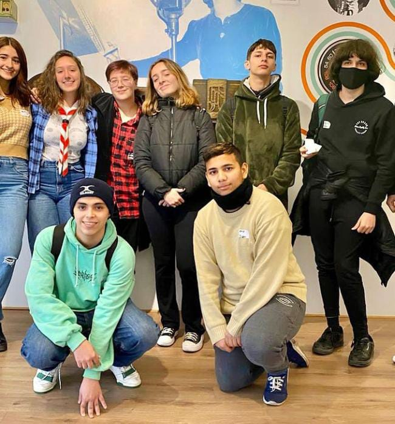

Maraton de lectura
Por Natalia Gómez de 5to A
La Maratón de Lectura es un evento dedicado a proporcionar el espacio ideal para compartir y promocionar el disfrute de la actividad lectora. La lectura estimula y potencia nuestro conocimiento, nuestros sentimientos y sentidos. Nos transporta de alguna forma a un mundo nuevo, el cual página a página vamos conociendo un poco más. Nos desconecta de todo sin hacer ningún click, o quizás sí, clickeamos el botón de la imaginación. Este año, todo el Nivel Secundario participó de esta actividad, pudiendo realizarla con libros que sean de su interés. Se dividió la actividad en dos etapas: lectura y producción. En un primer momento, se realizó una lectura silenciosa de los textos literarios escogidos tanto los alumnos como los docentes. En un segundo momento, los alumnos de cada curso, completaron una reseña crítica del texto e ilustraron, de manera creativa y libre, un dibujo del libro leído. En las dos horas de lectura estuvieron en cada curso los siguientes profesores: 1ro A Claudia Iarlori, 1ro B Fernando Fariña, 2do A David Carullo, 2do B Mariana González Palacios, 3ro A María Ana Rago, 3ro B Alejandro Angellotti, 4 to A Gladys Centurión, 4to B Elena Figueroa, 5to Alejandra Paganini y 5 to B Laura Rodríguez . Y en las dos horas de producción: 1ro A Fernando Fariña, 1ro B Alejandro Angellotti, 2do A Gladys Centurión, 2do B María Ana Rago, 3ro A Claudia Iarlori, 3ro B Myriam Marecos, 4to A Elena Figueroa, 4to B Mariana González Palacios, 5to A Sebastián Croxatto y 5to B Alejandra Paganini. Finalmente, todo lo producido por los alumnos fue expuesto en un afiche y subido al espacio “PUNTO DE ENCUENTRO” en “AULAS EN COMUNIÓN”. Destaco mucho el espacio que da el colegio para que esto se lleve a cabo. En lo personal, me gustaría que haya un espacio dedicado a una ida y vuelta (charla) en el curso, para que cada uno cuente de manera resumida lo que leyó. El momento de la ilustración me parece muy lindo, porque se expresa a través del dibujo lo que a uno le llegó del texto o lo característico de éste. Rompe con el esquema del profesor dando de tarea leer un libro y busca que el leer sea más placentero, por el hecho de que cada uno de nosotros elige el libro que desea; y que también, nos vayamos del colegio con las ganas de seguir leyendo.
